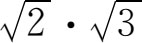

9．欧多克索斯学派
欧多克索斯是古希腊时代最大的数学家，并且在整个古代仅次于阿基米德。埃拉托斯特尼说他是“神明似的”人。他在公元前408年左右生于小亚细亚的尼多斯（Cnidos），曾在太兰吐姆求学于阿基塔斯，去埃及游历过，在那里学了些天文知识，然后在小亚细亚北部的基齐库斯成立了一个学派。公元前368年左右他和他的门徒加入柏拉图学派。几年之后他回到尼多斯并于公元前355年左右死于该地。他是一位天文学家、医生、几何学家、立法家和地理学家。他最出名的工作是创立了天体运动的第一个天文学说（见第7章）。
他在数学上的第一个大贡献是关于比例的一个新理论。越来越多无理数（不可公度比）的发现迫使希腊人不得不研究这些数。它们确实是数吗？它们出现于几何论证过程中，而整数和整数之比则既出现于几何也出现于一般的数量研究中。此外，用于可公度的长度、面积和体积的几何证明，怎样才能推广用之于不可公度的这些量呢？
欧多克索斯引入了变量（或简称为量）这个概念（第4章第5节）。它不是数，而是代表诸如线段、角、面积、体积、时间这些能够（用我们的语言来说）连续变动的东西。量跟数不同，数是从一个跳到另一个，例如从4跳到5。对于量是不指定数值的。然后欧多克索斯定义两个量之比并定义比例（即两个比相等的关系），把可公度比与不可公度比都包括在内。但他仍不用数表达这种比。比和比例的概念是同几何学分不开的，这在我们研究欧几里得书中第五篇时可以看出来。
欧多克索斯所做的这项工作是为了避免把无理数当作数。实际上，他连线段长度、角的大小以及其他的量和量的比，都避免给予数值。欧多克索斯的这个理论诚然给不可公度比提供了逻辑依据，从而使希腊数学家大大推进了几何学，但也产生了一些不幸的后果。
这种后果之一是它硬把数同几何截然分开，因为只有几何能处理不可公度比。它也把数学家赶到几何学家的队伍里去，因为在此后两千年间几何学变成几乎是全部严密数学的基础。我们如今仍把x2读作x平方，把x3读作x立方，而不把它们读作x二次或x三次，因为对希腊人来说，x2和x3这些量只有几何意义。
欧多克索斯处理不可公度长或无理数问题的办法实际上把以前希腊数学的重点颠倒了过来。早期毕达哥拉斯派肯定是重视数，把它当作基本概念的，并且欧多克索斯的老师、太兰吐姆的阿基塔斯也曾说过只有算术——而不是几何——能提供满意的证明。然而，古希腊数学家虽把几何搞得能够处理无理数，却因此放弃了真正的代数和无理数。当二次方程的解确实是无理数时他们对于解二次方程的事怎么办呢？当矩形的两边不可公度时，他们对于求矩形面积这样一个简单问题又怎么办呢？回答是他们把大部分代数都化成了几何，其办法我们在下一章里就要考察。用几何来表示无理数和无理数的运算当然是不合实用的，把

当作矩形面积来设想，这在逻辑上可能是足够令人满意的，但若为了想买地板漆布而需要知道乘积究竟等于多少，你就得不出结果。虽然希腊人把他们在数学上的最大气力花在几何方面，但我们必须记住整数和整数之比仍是他们认为可以接受的概念。在下一章中可以看到，数学的这个领域在欧几里得书中第七至九篇里是用演绎法建立起来的。其内容基本上属于我们所说的数论（或整数性质论）。
问题又出来了：古希腊人在科学工作中以及在商业和其他实务中需要用到数的时候怎么办呢？我们以后能知道，古希腊时代的科学仅仅是定性的。至于数的实际应用，我们以前就说过，那个时期的知识分子只限于做哲学和科学工作，不去从事商业和贸易；有教养的人不关心实际问题，他们可以在几何学里考察所有的矩形而不去关心哪怕是一个矩形的实际大小。他们就这样把数学思维同实际需要割裂开来，而且数学家也没有感到有去改进算术方法和代数方法的压力。只有当有文化的阶级与奴隶阶级之间的壁垒在亚历山大时期（约公元前300—约公元600）被冲破而且有教养的人关心实际事务的时候，重点才转移到数量知识以及发展算术和代数方面。
现在言归正传再来谈欧多克索斯的贡献。希腊人确定曲边形面积和曲面体体积的得力方法——现今称作穷竭法，也属于欧多克索斯。我们以后将考察这方法以及欧几里得对它的用法。这确实是微积分的第一步，但并没有用明确的极限理论。举几个例子来说，欧多克索斯用这方法证明两圆面积之比等于其半径平方之比，两球体积之比等于其半径立方之比，棱锥体积是同底同高棱柱体积的三分之一，以及圆锥体积是其相应的圆柱体积的三分之一。
从泰勒斯起的每个学派，都曾被某个权威说成是用演绎法整理过数学的。但欧多克索斯的工作建立了数学上以明确公理为依据的演绎整理，这一点是无可怀疑的。对不可公度比进行了解和运算的需要，无疑是促使他做这步工作的原因。由于欧多克索斯要着手给这些比提供逻辑依据，他很可能就此认识到有必要列出公理，并逐一推出结果，以保证在处理这些不熟悉而麻烦的量时不致出错。处理不可公度比的这一需要，无疑又增强了此前只凭演绎推理来作证明的决心。
因希腊人要寻求真理并决心用演绎证明，就要找出一些其本身便是真理的公理。他们确乎找出了一些他们认为真实性是不言而喻的命题，但把公理接受下来作为无可置辩的真理一事，所根据的理由却因人而异。几乎所有希腊学者都相信心灵能够认识真理。柏拉图有一种前世追忆说（theory of anamnesis），认为灵魂在投生到世间以前能直接体验真理，他只要追忆这种体验就能认识到几何公理是包括在这些真理之内的。人世间的经验是不必要的。有些数学史家从柏拉图和普罗克洛斯所说的话里捉摸出这样一种意思，即公理带有一些随意性，只要在个别人的心眼里感到它是清楚而真实的就行。重要的事情是根据所选取的公理来按演绎法作推理。亚里士多德关于公理发表过许多意见，我们即将指出他的看法。